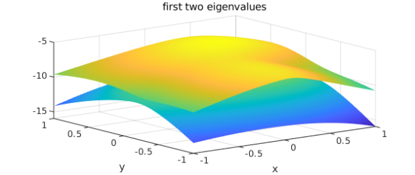
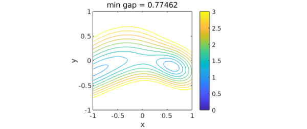
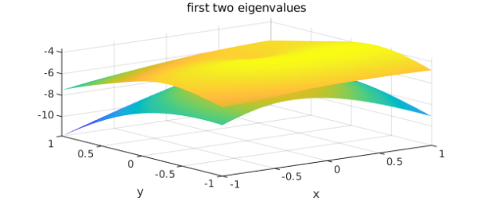
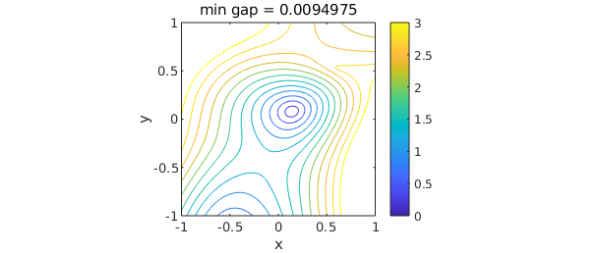
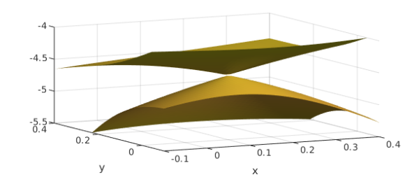

1. Complex hermitian
Let $n$ be a fixed dimension and let $B$, $C$, and $D$ be random $n\times n$ hermitian matrices:
n = 8; rng(1) B = randn(n) + 1i*randn(n); B = B + B'; C = randn(n) + 1i*randn(n); C = C + C'; D = randn(n) + 1i*randn(n); D = D + D';
If $x$ and $y$ are real parameters, we can consider the matrix
A = @(x,y) B + x*C + y*D;
and its eigenvalues
e = @(x,y) sort(eig(A(x,y)));
and its first and second eigenvalues
evalk = @(r,k) r(k); e1 = @(x,y) evalk(e(x,y),1); e2 = @(x,y) evalk(e(x,y),2);
Let us form chebfun2 objects from e1 and e2 and plot them:
f1 = chebfun2(@(x,y) e1(x,y), 'vectorize');
f2 = chebfun2(@(x,y) e2(x,y), 'vectorize');
plot(f1), hold on, plot(f2), hold off
title('first two eigenvalues'), xlabel x, ylabel y

According to the theory of eigenvalue avoidance for hermitian matrices [best references?], since there are just 2 parameters rather than 3 or more, the gap between the two eigenvalues will always (with probability 1) be positive. We can confirm this by a contour plot:
gap = f2-f1; mingap = min2(gap); levels = 0:.25:3; contour(gap,levels), axis equal, colorbar, caxis([0 3]) title(['min gap = ' num2str(mingap)]), xlabel x, ylabel y

2. Real symmetric
If we repeat all this for real symmetric matrices, the situation changes. Now, with two parameters, we can expect that there may be some eigenvalue crossings. To check this out, we compute the same objects as before. The random number seed has been chosen based on a bit of experimentation to give a nice picture.
rng(8) B = randn(n); B = B + B'; C = randn(n); C = C + C'; D = randn(n); D = D + D'; A = @(x,y) B + x*C + y*D; e = @(x,y) sort(eig(A(x,y))); evalk = @(r,k) r(k); e1 = @(x,y) evalk(e(x,y),1); e2 = @(x,y) evalk(e(x,y),2);
Sure enough, there is now a point where the eigenvalues meet, and as a consequence, if we try to make chebfun2 objects, they won't converge, since thee functions are nonsmooth. But we can get reasonably accurate chebfun2 objects by fixing the Chebfun2 grid:
npts = 512;
f1 = chebfun2(@(x,y) e1(x,y), [npts npts], 'vectorize');
f2 = chebfun2(@(x,y) e2(x,y), [npts npts], 'vectorize');
plot(f1), hold on, plot(f2), hold off
title('first two eigenvalues'), xlabel x, ylabel y

A contour plot confirms the eigenvalue crossing:
gap = f2-f1; mingap = min2(gap); contour(gap,levels), axis equal, colorbar, caxis([0 3]) title(['min gap = ' num2str(mingap)]), xlabel x, ylabel y

We can also see the crossing by zooming in on the two level surfaces:
plot(f1), hold on, plot(f2), hold off axis([-.1 .4 -.1 .4 -5.5 -4]), view([-27 18]), camlight xlabel x, ylabel y

Eigenvalue crossings are fascinating and can be found in a number of Chebfun examples. In particular, this example is a 2D analogue of "Eigenvalue level repulsion" (http://www.chebfun.org/examples/linalg/LevelRepulsion.html). The nontrivial zeros of the Riemann zeta function are conjectured to be related to the eigenvalues of a hermitian (not real symmetric) operator.